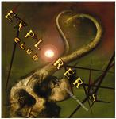

Home Artist links Label link

Explorers Club - Raising The Mammoth
| Artist: | Explorers Club |
| Title: | Raising The Mammoth |
| Label: | Magna Carta MAX 9046 2 |
| Length(s): | 59 minutes |
| Year(s) of release: | 2002 |
| Month of review: | [08/2002] |
Line up
Terry Bozzio - drums
Marty Friedman - guitar
Trent Gardner - keyboards, vocals
James LaBrie - vocals
Kerry Livgren - guitar
John Myung - bass
Mark Robertson - keyboards
Steve Walsh - vocals
Gary Wehrkamp - guitar
Jeff Curtis - guitar
Hal Imbrie - bass
Tracks
Raising The Mammoth 1
| | 1-13) Passage To Paralysis | 15.03
|
| | 14-19) Broad Decay | 11.43
|
| | 20-27) Vertebrates | 11.17
|
Raising The Mammoth 2 (Aka Prog-O-Matic)
| | 28-44) Gigantipithicus (instrumental) | 28.44
|
Summary
This album which in fact contains only one song in tow parts, divided
into four "movements" spread over a total of 44 separate tracks on my cd
was probably formed in this fashion to make recording 4 samples for the
website as hard as possible (or was it done to make the instrumental not
only range from track 28 to 44, but also take 28 minutes and 44 seconds?).
Well, they have succeeded, although they did leave enough titles
for me to take one sample from each). This Gardner project is populated by
quite a few
(do I hear usual?) big names from the Magna Carta stable. With the memory
of writing a negative review for the previous Explorers Club in my mind,
I wonder what I shall make of this one.
The music
Passage To Paralysis opens with a filmic fragment, heavy on the percussion
and evoked tension. Then the vocals set in in impressionist form for now:
only ahhh-ahhhs. Only in fragment three does the rock finally set in.
This is up-tempo progressive rock dominated by guitar and a fast paced bass.
We are still in introduction mode. The main vocal part starts in fragment 4
sung by Steve Walsh. This is a rather easy-going one, with dark guitar lines,
an off-beat rhythmic feel, maybe a bit of Peter Gabriel in here, percussive
wise. Walsh's vocals are soulful as ever, but the continuation also contains
some more estranging vocal parts, a claustrophobic passage with varied,
fragmented vocals, more typical for Gardner, whose music is often a bit
on the "cold" side. In fragment 9 (admittedly, all these separate parts
are easy for reference), we get an organ solo. All the while a noisy guitar
keeps the background well-filled, making this song interesting yet tiresome
listening, there is simply a lot of sound and a lot of things going on.
In part 12 we break into a different vocals, with doubled vocals and
subsequently a typical Gardner vocal melody. We end this first part in
spooky reverb, spacey electronics in fact.
The second part is Broad Decay. The song opens with vocal echoes. This first
track has rather calm melodic, melancholic vocals by Steve Walsh again, it
seems the other vocalist get a lot less lead singing to do. In the next part
we get some fluting keyboards, keeping the overall feel of the song somber
and slow. Notwithstanding, the sound spectrum is again quite full: the Oh Yeahs
in the back, lots of synths working. Still, the music is a lot warmer here.
In fragment 8, the rock attempts to return into the music, but it is not
allowed to happen yet. The song ends with a chorus of vocalists, a bit in the
gospel style of I Want To Know What Love Is, but in more progressive style and
it seems to me, lacking a bit in energy, but that could have been done on
purpose.
Vertebrates is the final vocal part. Opening in almost Ozrics style this
is swirly keyboards. A strumming acoustic guitar takes over and LaBrie
(and probably Gardner) alternately sing in low key (where I like LaBrie best, or
alternatively you might where I like him at all). Again, this quite a dreamy
and mellow part. Later on both vocalist enter higher regions, but it does
not really bother me. It helps that the vocal melodies are good. The keyboard
solo part is plodding and a bit in ELP style. This is a rather meandering
part of the song, where as often happens, the music can be described
as "anthem for a world wide technocracy". I often have this feeling
with Gardner's music (like Magellan for instance).
The final almost 29 minutes are devoted to a long instrumental track.
Of course I could go into details, but I shall spare you these.
On the whole, the song contains all of the following:
bombastic themes, anthemic guitar unisono's, lovely piano, grand classical
string like
interludes (think Also Sprach Zarathustra here), claustrophobic progressive rock
and much more. At times, the music gets to be really filmic and I like that
with quite a bit of orchestral passages. Add to this some really nice build-ups
such as in fragment 39. Pomp pervades fragment 40, in fragment 42 it seems
someone is ringing a church organ (yes, ringing). Later on, the church organ
is played in a more usual fashion. We are getting ready for the finale here
with some optimistic guitar leads, a tension building in the repetitive next
part, the mammoth is raising its woolly head. The final part opens as typical
aggressive progressive rock, think closing section of The Musical Box, but
later on winds down slowly.
Conclusion
Well, this is a hard album to judge. All the Gardner elements are here and
since my judgment of his work is usually somewhere halfway good and bad,
it seems this album turned out quite well. I did not like Age Of Impact
very much, especially because of the presence/presentation of some of the
vocalists. LaBrie was one of those, but I like him better here, also because
he doesn't yell as much. Melodically, Gardner has his typicalities and
I guess you have to like these. His music comes off rather dense and
cold, but admittedly some of the vocal melodies are good and with Steve Walsh
he has a vocalist who has just that bit of soul that most singers lack.
Sometimes I would hope Gardner would take a more transparent approach to music,
there are so many details, that the music can be quite a drain on your energy.
Summarizing: definitely Gardner/Magellan, and quite a bit better than the
previous Explorers Club. I do wonder what the new Magellan will sound like.
© Jurriaan Hage